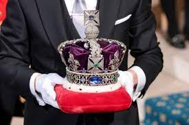

THE DAZZLING CROWN

Queen Elizabeth II, was also the queen of the Commonwealth for 70 years. The Commonwealth came into being in 1926,
and it is the union of 56 states. The term is used to define the union of former British colonies, when they are
granted self-government, until full independence.
Above the Queen's coffin, now placed in her state in Westminster Hall, was placed her crown, which she wore until
her death.
It was made in 1937 for the coronation of the Queen's father, King George VI. The Empire Crown was designed to be
lighter and more comfortable than the crown it replaced, dating from the Victorian era, which was much heavier than
the current crown. However, in 2019, when the monarch was about 90 years old, a lighter one was created, and in
2021, the last time she attended a ceremony, she didn’t wear it at all.
The queen was particularly enthusiastic about a huge red gem in the crown, known as the Black Prince's Ruby. Legend
has it that the king inserted a feather into a hole in the ruby. In fact, the BBC presenter who went close to
document it described it as "unreal."